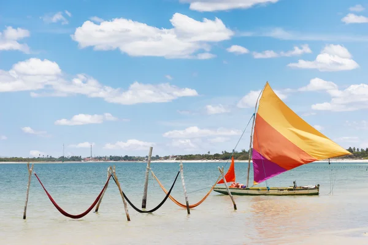
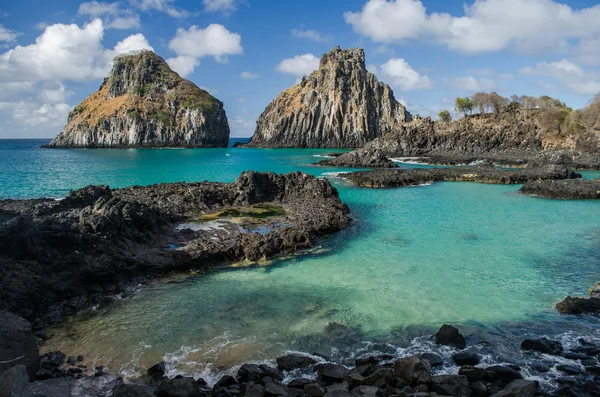
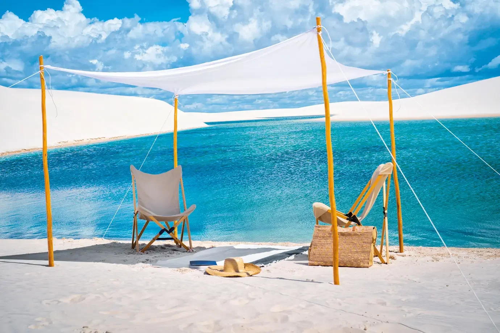
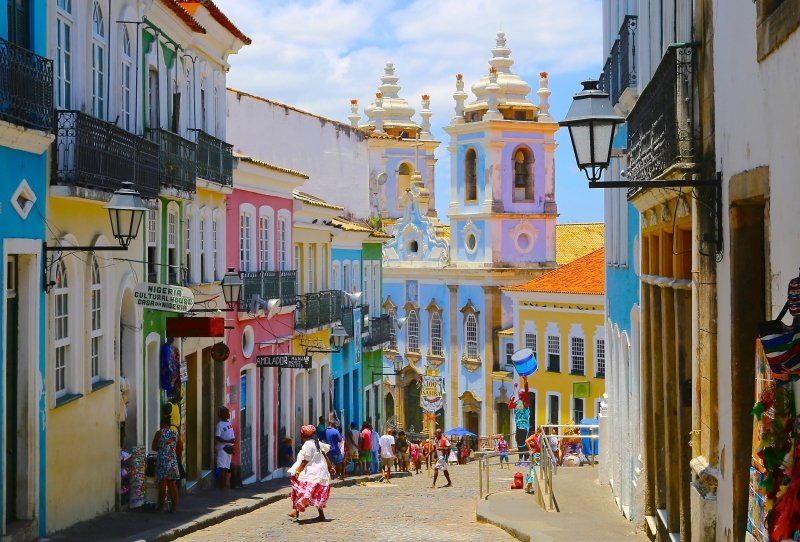
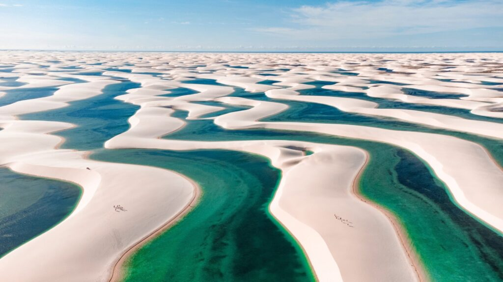

Celebration, Ancestry, and Freedom
The Northeast is a true celebration of life and freedom. Salvador, with its Afro-Brazilian heritage, is also a city of resistance and LGBTQIA+ pride, hosting events like Salvador Pride and inclusive Carnival blocs. Recife, Fortaleza, and João Pessoa follow this vibrant rhythm, with beaches popular among LGBTQIA+ visitors, a dynamic art scene, and culturally engaged initiatives. Pipa and Porto de Galinhas are perfect queer-friendly getaways to relax and reconnect. In the Northeast, every trip is an ode to joy, diversity, and love in all its forms.
What makes the Northeast truly unforgettable is its warm and welcoming spirit. The rhythm of samba and axé, the flavors of local cuisine, and the contagious energy of its people create an atmosphere where LGBTQIA+ travelers feel embraced and celebrated. It’s a region where cultural identity and queer expression walk hand in hand — turning every corner, beach, and festival into a vibrant tribute to inclusion and authenticity.